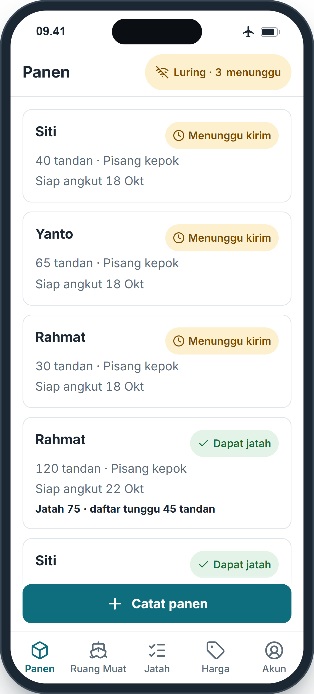
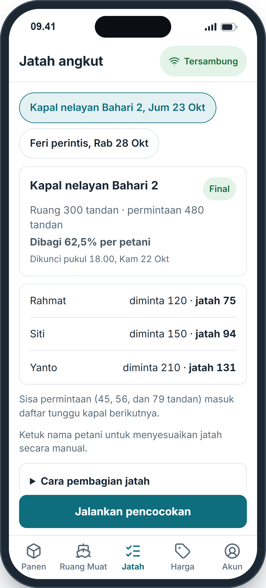
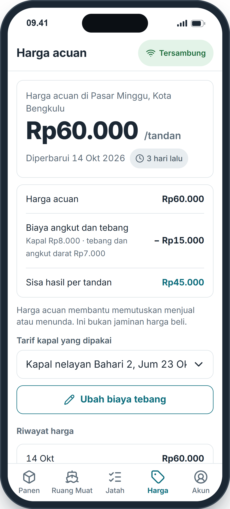
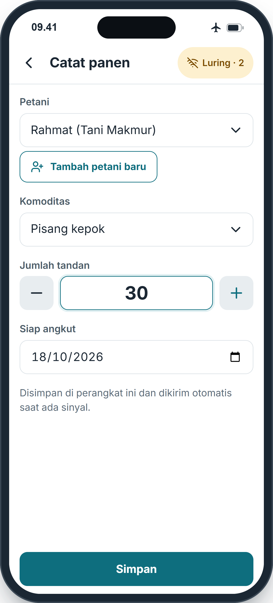
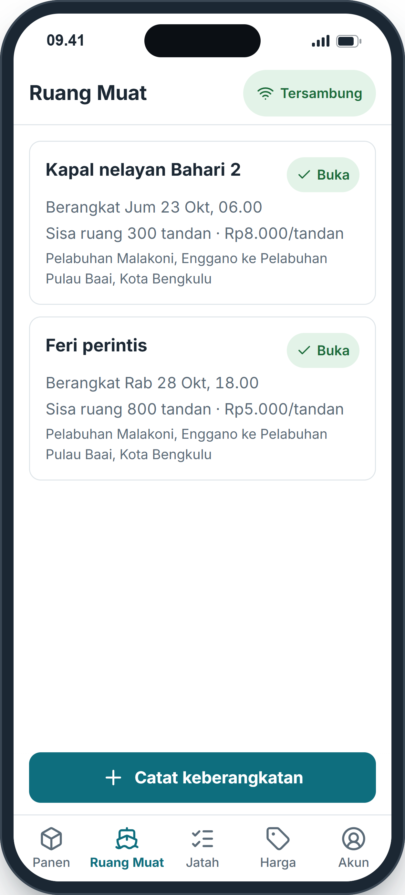
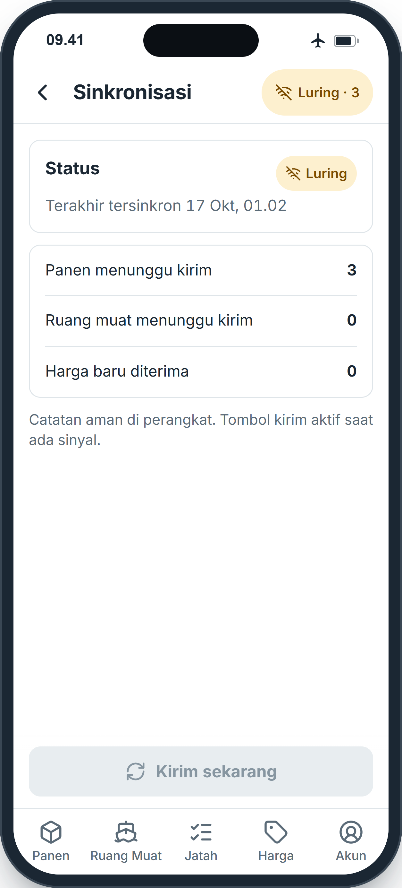
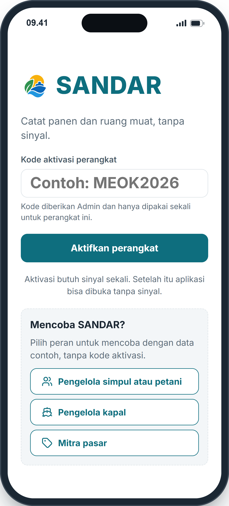

Aplikasi luring untuk koordinasi muatan kapal dan informasi harga bagi petani pisang pulau terluar.



Pelayaran ke Pulau Enggano sering terhenti oleh pendangkalan alur pelabuhan dan cuaca, sementara listrik dan internet di pulau tidak stabil. SANDAR mempertemukan hasil panen petani dengan ruang muat kapal, membagi ruang yang terbatas secara adil, dan menampilkan harga di daratan.
Petani membawa panen ke pelabuhan tanpa kepastian muat.
Pengelola kapal tidak tahu volume yang harus diangkut.
Posisi tawar petani lemah terhadap pedagang bermodal besar.
Layanan digital berhenti saat listrik dan sinyal putus.
Semua aksi tersimpan di ponsel dan langsung berhasil. Pengiriman menyusul saat sinyal ada.
Aturan pembagian sederhana, tertulis di layar, dan bisa dihitung ulang dengan tangan.
Dirancang untuk ponsel murah dan pengguna yang tidak terbiasa dengan aplikasi rumit.
Setiap peran melihat layar yang berbeda sesuai tugasnya. Petani yang tidak memiliki ponsel pintar dilayani simpul desa: satu perangkat yang dipegang pengelola dari koperasi desa atau kelompok tani.
| Peran | Siapa | Layar utama |
|---|---|---|
| Petani | Petani pisang dengan ponsel sendiri | Panen, Jatah, Harga. Hanya melihat catatannya sendiri. |
| Pengelola simpul | Pemuda desa dari koperasi atau kelompok tani | Panen seluruh desa, Jatah (jalankan pencocokan), Harga (biaya tebang) |
| Pengelola kapal | Pemilik atau awak feri, kapal perintis, kapal nelayan | Ruang Muat: catat keberangkatan, sisa ruang, tarif, status |
| Mitra pasar | Pedagang atau pengelola pasar di Kota Bengkulu | Input harga per tandan |
| Admin | Tim pengembang dan pendamping perguruan tinggi | Kelola: akun, desa, kapal, kode aktivasi, parameter, ringkasan indikator |
Enam langkah ini berjalan berulang setiap ada kapal. Langkah 1, 2, 4, 5, dan 6 tetap bisa dilakukan tanpa sinyal.


Setiap catatan ditulis ke penyimpanan ponsel sebelum tanda "Tersimpan" muncul. Catatan tidak hilang walau aplikasi ditutup paksa atau daya padam, lalu terkirim sendiri saat sinyal kembali.
| Pemicu | Sinyal terdeteksi, setiap 15 menit saat aplikasi terbuka, atau tombol Kirim sekarang |
| Urutan | Antrean terlama dikirim dulu, paling banyak 50 catatan per kiriman, lalu perubahan diambil dari server |
| Tanpa ganda | Setiap catatan punya ID unik dari ponsel. Kiriman ulang tidak digandakan server |
| Bentrok | Perubahan yang lebih dulu diterima server menang. Ponsel lain diberi tahu dan mengambil data terbaru |
| Gagal kirim | Dicoba ulang dengan jeda bertahap. Data di ponsel baru dihapus setelah server mengonfirmasi |
Luring · 3 menunggu tidak ada sinyal, tiga catatan aman di ponsel
Tersambung ada sinyal, semua catatan sudah terkirim

Status selalu tampil sebagai ikon dan kata, tidak hanya warna, agar mudah dibaca di ponsel murah dan di bawah terik matahari.
| Menunggu kirim | Tersimpan di ponsel, belum sampai server |
| Terdaftar | Diterima server, menunggu pembagian |
| Dapat jatah | Mendapat ruang. Bila sebagian, sisanya tercatat di daftar tunggu |
| Daftar tunggu | Belum dapat ruang, ikut dibagi pada kapal berikutnya |
| Terangkut | Sudah naik kapal |
| Dibatalkan | Tidak ikut pembagian, riwayat tetap disimpan |
SANDAR memakai pembagian proporsional sederhana dengan metode sisa terbesar. Aturannya dipilih agar mudah dijelaskan kepada petani dan bisa dihitung ulang dengan tangan.
Bila total permintaan tidak melebihi ruang kapal, semua permintaan dapat ruang penuh.
Bila tidak cukup, setiap petani mendapat persentase yang sama dari permintaannya, dibulatkan ke bawah.
Tandan sisa diberikan satu per satu ke pecahan terbesar. Bila sama, yang mencatat lebih dulu didahulukan.
Ruang 300 tandan, permintaan 480 tandan, jadi setiap petani mendapat 300 ÷ 480 = 62,5 persen dari permintaannya. Data contoh PRD 7.2.
| Petani | Diminta | 62,5% | Bulat bawah | Jatah |
|---|---|---|---|---|
| Rahmat | 120 | 75,00 | 75 | 75 |
| Siti | 150 | 93,75 | 93 | 94 |
| Yanto | 210 | 131,25 | 131 | 131 |
| Jumlah | 480 | 300,00 | 299 | 300 |
Pembulatan ke bawah menghasilkan 299 tandan. Satu tandan sisa diberikan kepada Siti karena pecahannya paling besar (0,75).
Hasil di ponsel berlabel Sementara karena hanya memakai data desa itu. Server menggabungkan data semua desa menjadi hasil Final, lalu menguncinya pukul 18.00 sehari sebelum kapal berangkat. Bila hasil Final berbeda, ponsel menampilkan pesan "Jatah berubah" beserta angka barunya. Bila keberangkatan batal, jatahnya kembali ke daftar tunggu.
Harga di pasar daratan belum tentu harga yang diterima petani. SANDAR mengurangi biaya kapal serta biaya tebang dan angkut darat, sehingga petani melihat sisa hasil per tandan sebelum memutuskan.
| Komponen | Diisi oleh | Keterangan |
|---|---|---|
| Harga acuan | Mitra pasar | Harga terbaru per pasar di Kota Bengkulu, beserta tanggalnya |
| Tarif kapal | Pengelola kapal | Tarif per tandan pada keberangkatan yang dipilih |
| Tebang dan angkut darat | Pengelola simpul | Satu nilai per desa |
| 0 sampai 3 hari | Tanggal pembaruan tampil biasa |
| 4 sampai 7 hari | Label umur ditebalkan |
| Lebih dari 7 hari | Harga lama, harga terakhir tetap ditampilkan |
Layar Harga selalu memuat kalimat: "Harga acuan membantu memutuskan menjual atau menunda. Ini bukan jaminan harga beli." Aplikasi hanya menampilkan angka; keputusan tetap di tangan petani.
Perangkat yang hilang, PIN yang ditebak, atau data yang bocor adalah risiko nyata di lapangan. SANDAR menanganinya berlapis.
Perangkat baru diaktifkan sekali dengan kode dari Admin. Kode hanya berlaku sekali dan percobaan kode salah dibatasi.
PIN disimpan sebagai hash dan diperiksa di ponsel, sehingga masuk tetap bisa tanpa sinyal. Lima kali salah, masuk dikunci 5 menit.
Petani hanya melihat catatannya sendiri. Rincian jatah per petani hanya dikirim ke perangkat desanya.
Setiap perangkat wajib memakai kunci layar Android, sehingga penyimpanan ponsel terenkripsi. Perangkat hilang dinonaktifkan Admin.
Admin melihat empat indikator keberhasilan per desa dan per bulan, serta dapat mengekspornya ke CSV.
Persentase panen terangkut dalam 7 hari sejak siap angkut
Selisih harga terima petani dengan harga acuan setelah biaya angkut
Hari dari siap angkut sampai naik kapal
Catatan tersinkron dalam 24 jam dan jumlah petani terdaftar
Setiap penyesuaian jatah manual, perubahan harga, dan perubahan akun tercatat di log audit.
SANDAR dapat dicoba langsung dengan data contoh, tanpa kode aktivasi. Buka di Chrome pada ponsel Android, atau di laptop.
sandar-6mgj.onrender.com
Pindai dengan kamera ponsel
Server gratis tidur bila tidak dipakai. Bila halaman pertama lambat terbuka, tunggu sekitar 1 menit.

tes otomatis server dan aplikasi
tes end-to-end, termasuk mode pesawat dan tutup paksa
unduhan awal untuk ponsel murah
Seluruh nama, angka, dan harga dalam dokumen ini adalah data contoh, bukan data lapangan.